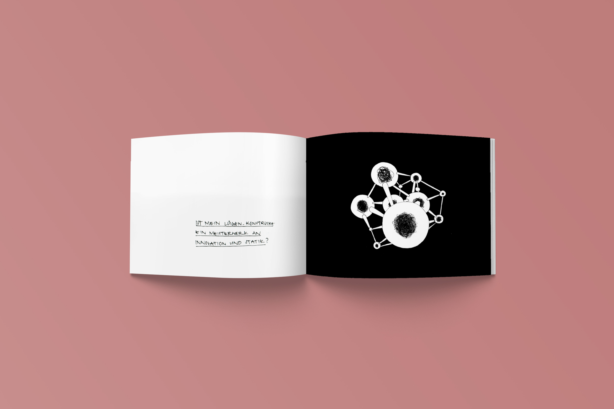

A series of llustrations that interprets selected questions asked by David
Fischli and Peter Weiss in their Book „Will happiness find me“. An
The renowned Swiss duo dedicated this artist‘s book to the questions
that everyone asks themselves every once in a while.
Print Findet mich das Glück – Will happiness find me 114x142mm, School of Arts Bern, 2013
„Am I my soul’s sleeping bag?“ & Title Page displayed below.Print Findet mich das Glück – Will happiness find me 114x142mm, School of Arts Bern, 2013
„Is my digestion something wonderful?“Print Findet mich das Glück – Will happiness find me 114x142mm, School of Arts Bern, 2013
„Am I my soul’s sleeping bag?“Print Findet mich das Glück – Will happiness find me 114x142mm, School of Arts Bern, 2013
„Am I a miserable stinking rat?“Print Findet mich das Glück – Will happiness find me 114x142mm, School of Arts Bern, 2013
„Is Mister Madness standing outside my door?“

Print Findet mich das Glück – Will happiness find me 114x142mm, School of Arts Bern, 2013
„Is my construct of lies a masterwork of innovation and statics?“Print Findet mich das Glück – Will happiness find me 114x142mm, School of Arts Bern, 2013
„Am I a sponge?“